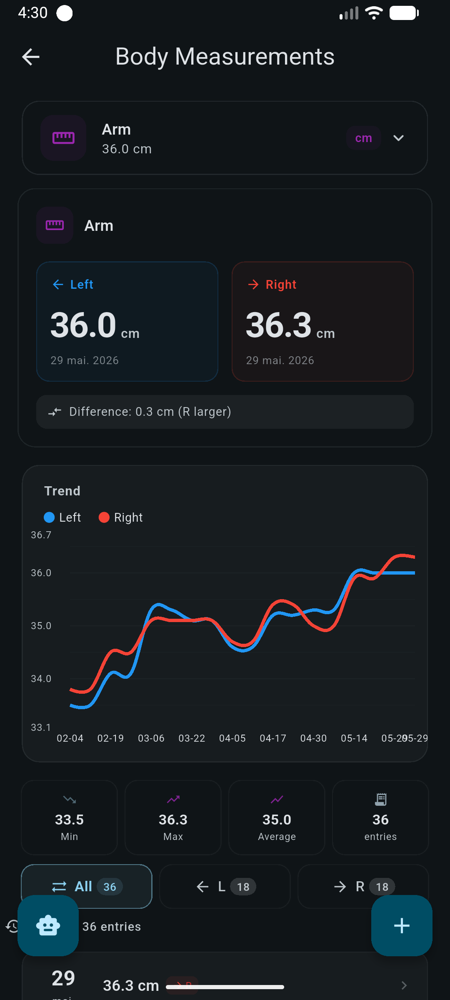

What you can track
Reachable from Tools → Measurements on the Workout tab. You choose which types are visible, so the screen only shows what you actually measure.
| Type | Reads as improvement when it |
|---|---|
| Weight | falls |
| Body fat | falls |
| Waist | falls |
| Hip | falls |
| Chest | grows |
| Arm | grows |
| Forearm | grows |
| Neck | grows |
| Thigh | grows |
| Calf | grows |
| Blood pressure | stored as two values and shown as 120/80 |
Entries are tagged with a time of day: morning, afternoon, evening or night, each with its own icon in the list. That matters more than it sounds: a morning and an evening weigh-in are not the same measurement, and being able to see which is which explains a lot of apparent noise.
Your most recent weight entry is used to estimate workout and run calories, and to compute weight metrics inside a periodization phase. Without a weight on file, calorie figures are simply omitted rather than guessed.
The analytics screen
Pick a type and a window (4 weeks, 12 weeks, 26 weeks or all time), and the screen builds daily, weekly and monthly views over the same Sunday-aligned range, so the three views always cover identical weeks. Types with no data are hidden from the selector.

How the series is built
- Same-day entries are averaged into one point, so three weigh-ins in a day do not outweigh a day with one.
- Future-dated rows are dropped.
- The smoothed line is a trailing mean of the last 7 data points (points, not calendar days), and never looks ahead, so the line does not change retroactively when you add tomorrow's entry.
- Weeks with no data are kept and marked as empty rather than skipped, so gaps stay honest.
What each number means
- Rate per week
- A least-squares slope of value against days, multiplied by 7. It needs at least three distinct days spanning at least a week; otherwise it is not shown at all, rather than shown as a wild number.
- This week vs last
- Compared against the nearest earlier week that has data. If a week was skipped, the comparison says so instead of pretending the weeks were adjacent.
- Total change
- First to last value in the window.
- Amplitude
- Maximum minus minimum: a quick read on how much daily fluctuation you are dealing with.
- Consistency
- Weeks with at least one entry, over weeks in the window.
- Week streak
- Consecutive weeks with an entry, counted back. An empty current week does not break it; you still have days left.
- Entries per week
- Average logging frequency in the window.
- Days since last
- How stale the newest entry is.
Goal progress and projections
Give a measurement a target and the screen adds a progress read that is deliberately conservative about direction.
- Progress is clamped between 0 and 1. Movement away from the target counts as zero rather than as negative progress.
- Reached when you are within 0.05 of the target; passed when you overshot in the direction you were heading; overshooting is treated as success, not failure.
- On track when the sign of your trend points at the target.
-
Time to target is
remaining ÷ |rate per week|, converted to a date. Anything beyond about five years is discarded rather than displayed.
projected value = current + rate per week × weeks ahead
A straight-line extrapolation of the fitted trend. Useful for a few
weeks out; meaningless for a few months out.
Body composition figures are derived from the measurements you enter and inherit their error. Treat the direction of the trend as the signal and the absolute value as approximate.
Where this data shows up elsewhere
- The Wellness tab of Progress plots body weight against training volume and shows a measurement summary and composition trend.
- Periodization phases use starting and ending weight, weight change, weekly change percentage and adherence to a planned rate.
- Nutrition uses your weight for the BMR and macro calculations behind suggested targets.
- The AI Coach can read measurements through a read-only tool when you ask about your trend.